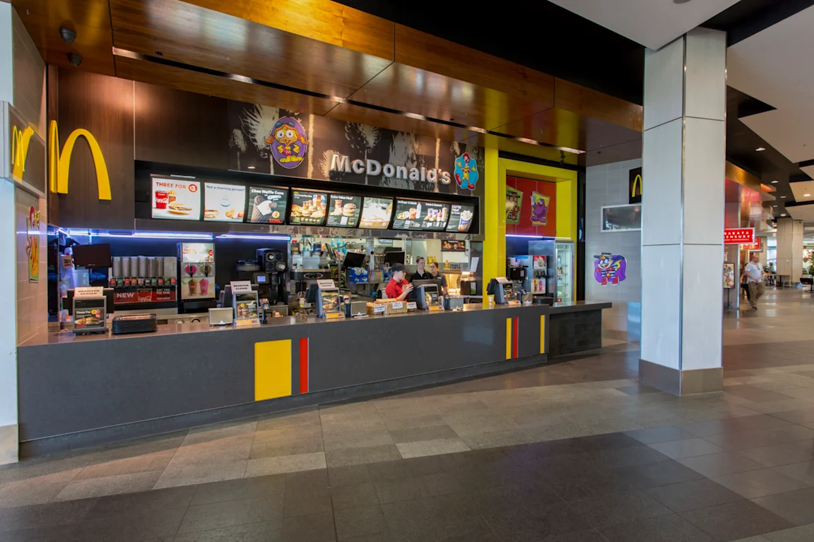
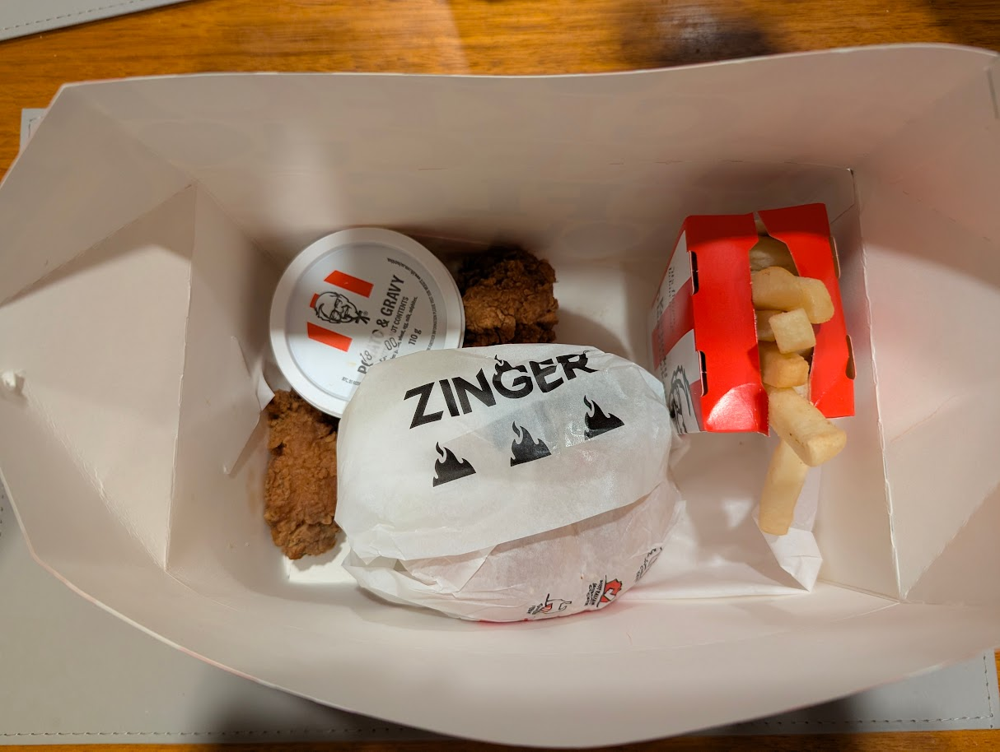

Restaurants
This page contains a list of restaurants available on our platform.
Cherry Hill Tavern
Reserve a place here!Cherry Hill Tavern is a family friendly bistro, specialising in crowd pleasers, like burgers, steaks, parmas, bar bites, and more! At Cherry Hill, there are many options for you to choose from, as well as playground for children, pokies machines for gamblers, and a bar for socialising!
Signature Dishes
Some of the most well known dishes at Cherry Hill Tavern include:
- Chicken Parma - $29
- Various Steak Options - $29-$49
- Grilled Chicken Burger - $26
- Beer Battered Snapper - $27
Info Table
| Cuisine Type | Pub Food |
|---|---|
| Deposit Amount for Reservations | $0 |
| Average Price Per Person | $30-$60 |

Bocca
Reserve a place here!Bocca is an Italian restaurant found in Warrandyte that specialises in a variety of Italian foods, including many types of pizzas, pastas and other community favourites, such as parmas! As well as this, Bocca is relatively affordable for its quality.
Signature Dishes
Some of the most well known dishes at Bocca include:
- Chicken Parma - $28
- Wood Fired Margherita Pizza - $22
- Traditional Margherita Pizza - $12.60-$19
- Lasagna - $19.50
Info Table
| Cuisine Type | Italian |
|---|---|
| Deposit Amount for Reservations | $0 |
| Average Price Per Person | $15-$40 |

The Pancake Parlour
Reserve a place here!The Pancake Parlour is a chain of restaurants, iconic for their fun dining experience and focus on pancake based meals! When walking into the Pancake Parlour, you'll instantly see fun details like warped mirrors, an hourly show with a train, and fun decorations!
Signature Dishes
Some of the most well known dishes at The Pancake Parlour include:
- Regular Stack - $19.90
- Pancakes Lasagne - $26.50
- Fresh Strawberries - $16.50/$26.50 (based on size)
- Mixed Berry Pancakes - $19.90
Info Table
| Cuisine Type | Breakfast/Lunch/Sweet Treats |
|---|---|
| Deposit Amount for Reservations | $0 |
| Average Price Per Person | $17-$35 |

Sushi Hub
Reserve a place here!Sushi Hub is a chain of takeout and dine-in sushi restaurants located around Melbourne, also occasionally with sushi trains. Customers can sit and watch a variety of Japanese and sushi meals rotate around the train, where they can select whichever plate they feel like, ranging across different costs.
Signature Dishes
- Salmon Nigiri - $4.90
- Mini Tuna Rolls - $3.90
- Salmon and Avocado Ships - $4.90
- Mini Salmon Rolls - $4.90
Info Table
| Cuisine Type | Japanese/Sushi |
|---|---|
| Deposit Amount for Reservations | N/A, walk in |
| Average Price Per Person | $9-$20 |

McDonald's
Reserve a place here!McDonald's is a global fast-food chain known for its iconic burgers, fries, and breakfast items. With a quick and convenient ordering system, McDonald's offers affordable meals that are perfect for a quick meal on the go. While McDonald's is often considered unhealthy, it is optimal for customers who are looking for a very quick and affordable dining option, often on the go, or for when people don't want to cook.
Signature Dishes
Some of the most well known dishes at McDonald's include:
- Big Mac - $8.25
- Quarter Pounder - $8.60
- 10pc Chicken McNuggets - $10.25
- Large Fries - $5.10
Info Table
| Cuisine Type | Fast Food |
|---|---|
| Deposit Amount for Reservations | N/A, walk in |
| Average Price Per Person | $10-$20 |

KFC
Reserve a place here!KFC is a popular fast-food chain specialising in fried chicken based meals. Iconic for their secret recipe and crispy chicken, KFC offers a variety of combos, buckets, and individual pieces for customers seeking delicious and satisfying chicken meals. While also another fast-food option, KFC often can be slightly cheaper than McDonald's, while also offering a variety of sides such as potato and gravy, dinner rolls and coleslaw.
Signature Dishes
Some of the most well known dishes at KFC include:
- Original Recipe Burger - $8.45
- 21 Piece Bucket - $40.95
- Zinger Burger Box - $14.95
- Snack Popcorn Chicken - $2.95
Info Table
| Cuisine Type | Fast Food |
|---|---|
| Deposit Amount for Reservations | N/A, walk in |
| Average Price Per Person | $12-$25 |
